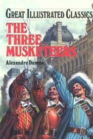
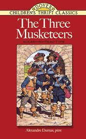

აქ შეგიძლიათ ნახოთ ახალი ინფორმაცია მსოფლიოში წიგნების მიმართ
3 მუშკეტერი
სამი მუშკეტერი — ალექსანდრე დიუმას რომანი. მოქმედება მე-17 საუკუნეშია მოთხრობილი ახალგაზრდა კაცის, სახელად დ'არტანიანის თავგადასავალზე, მას შემდეგ რაც ის სახლიდან წავიდა პარიზში გასამგზავრებლად, გვარდიის მუშკეტერებთან შესაერთებლად. დ'არტანიანი არ არის ტიტულის მუშკეტერი; ესენი არიან მისი მეგობრები ათოსი, პორთოსი და არამისი, განუყრელი მეგობრები, რომლებიც ცხოვრობენ დევიზით „ყველა ერთისთვის, ერთი ყველასთვის“, დევიზი, რომელიც პირველად წამოაყენა დ’არტანიანმა. ჟანრში სამი მუშკეტერი, უპირველეს ყოვლისა, ისტორიული რომანი და თავგადასავალია. თუმცა დიუმა ასევე ხშირად მუშაობს ძველი რეჟიმის სხვადასხვა უსამართლობაზე, შეურაცხყოფასა და აბსურდებზე, რაც რომანს აძლევს დამატებით პოლიტიკურ ასპექტს იმ დროს, როდესაც საფრანგეთში რესპუბლიკელებსა და მონარქისტებს შორის დებატები ჯერ კიდევ მწვავე იყო. სიუჟეტი პირველად სერიულად გამოვიდა 1844 წლის მარტიდან ივლისამდე, ივლისის მონარქიის დროს, 1848 წლის საფრანგეთის რევოლუციამდე, მეორე რესპუბლიკის ძალადობრივ დამყარებამდე ოთხი წლით ადრე. ავტორის მამა, თომას-ალექსანდრე დიუმა იყო ცნობილი გენერალი საფრანგეთის რესპუბლიკურ არმიაში საფრანგეთის რევოლუციური ომების დროს.


1984
რომანის მთავარი გმირია უინსტონ სმითი. იგი ცხოვრობს ლონდონში, მუშაობს სიმართლის სამინისტროში და არის გარე პარტიის წევრი. იგი არ უჭერს მხარს პარტიულ ლოზუნგებსა თუ იდეოლოგიას და გულის სიღრმეში პარტიას, გარშემო არსებულ რეალობასა და ზოგადად, ყველაფერს ეჭვის თვალით უყურებს. რათა საკუთარი ემოციები დახარჯოს, იგი ავსებს დღიურს, რომელშიც საკუთარ აზრებს გადმოსცემს. სხვების დასანახად ის ცდილობს პარტიული იდეების მოყვარულად გამოიყურებოდეს. მაგრამ ეშინია, რომ გოგონა ჯულია, რომელიც იმავე სამინისტროში მუშაობს, მას უთვალთვალებს და სურს მისი გამოაშკარავება. იმავე დროს სმითი ფიქრობს, რომ მათი სამინისტროს მაღალჩინოსანი, შიდა პარტიის წევრი, ვინმე ო’ბრაიენი ასევე არ უჭერს მხარს პარტიულ იდეებს და ფარული რევოლუციონერია.ერთხელ, როდესაც აღმოჩნდება ერთ-ერთ რაიონში, რომელშიც პარტიის წევრთა შესვლა არ არის სასურველი, სმითი შედის ვინმე ჩერინგტონის ძველი ნივთების მაღაზიაში. უკანასკნელი მას უჩვენებს ოთახს და უინსტონს აქვს სურვილი, მასში ერთი კვირა მაინც გაატაროს. უკანა გზაზე მას ხვდება ჯულია. სმითი მიხვდება, რომ ჯულია უთვალთვალებდა. იგი ორ ცეცხლს შორის არის - სურს გოგოს მოკვლა და შიშით არის მოცული. მაგრამ დასძლებს რა შიშს გადაწყვიტავს, მაინც მოკლას ჯულია. მაგრამ გოგო მას გადასცამს ქაღალდს, რომელშიც სმითისადმი თავის სიყვარულზე საუბრობს. მათ შორის სასიყვარულო ურთიერთობები იწყება. თვეში რამდენიმეჯერ ისინი ერთმანეთს ხვდებიან, მაგრამ უინსტონს აწუხებს გრძნობა, თითქოს ისინი უკვე მკვდრები არიან (პარტიის მიერ ქალსა და მამაკაცს შორის თავისუფალი ურთიერთობები აკრძალულია).